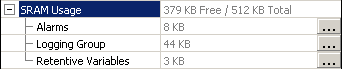
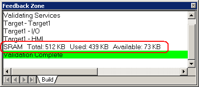

|
|
|
|
|
|
|
|
You can check the amount of memory required by the user application before running it on the target machine. You can check SRAM after validation and DRAM usage in the build details.
SRAM is required to keep data available between run-time sessions. DRAM is required to run the application.

Harmony iPC target machines use simulated SRAM on the CF Card or hard disk to back up and store data between run-time sessions.
There are two ways to check SRAM Memory Usage.
In the target properties, the SRAM Usage property shows the amount of SRAM that is available, as well as the total amount of SRAM.
Expand the SRAM Usage property to see how SRAM is allocated to various components.

Validate the user application. When validation is complete, the SRAM Usage statistics are displayed in the Feedback Zone.


For information about the amount of SRAM available on your target machine, see Appendix 4, Run-Time Specifications.
In every run-time application, there is an overhead for the run-time files (configuration, run-time event log, and run-time application updates.) This overhead is included in the SRAM memory usage count for the system, which is shown in the Property Inspector.
SRAM calculation for alarms, data logging files, and retentive variables is based on the following memory usage allocations:
|
Component in the Application |
Memory Usage Allocation |
|
|
Alarm |
Active |
Each Record x 20 bytes |
|
History |
Each Record x 24 bytes |
|
|
Log |
Each Record x 16 bytes |
|
|
Data Logging |
The following elements impact SRAM usage calculation for Data Logging:
|
|
|
Retentive Variables |
Integer |
Each retentive Integer x 4 bytes |
|
REAL |
Each retentive REAL x 4 bytes |
|
|
BOOL |
Each retentive BOOL x 1 byte |
|
|
STRING |
Each retentive STRING x [4 bytes + (2 x data length)] |
|
|
|
||
Use this feature to make sure the user application will run properly on the target machine. When you use too much of the available memory on a target machine, the user application will not run. You can view how much memory is required by building the project.
From the Build menu, click Options to open the Build Options dialog box.
When you build the application, the Feedback Zone displays a calculated percentage of how much DRAM is required at run time. Use this information as a guide in developing the application and make sure the application does not exceed 100% of DRAM usage.

Do not depend solely on this memory check. Memory usage is accurate within 10%. The memory actually required by the run-time application may be 10% more or 10% less than the indicated amount. Test your application thoroughly on the run-time platform before going into a production environment.
Make sure the amount of memory required by each panel does not exceed the amount of DRAM available on your target machine. If a panel's memory requirements exceed the amount of memory available, Vijeo-Designer Runtime either stops running or doesn't even start. For information about the amount of DRAM available on your target machine, see Appendix 4, Run-Time Specifications. For information on how to reduce DRAM usage in your application, see Appendix 7, Project Optimization.